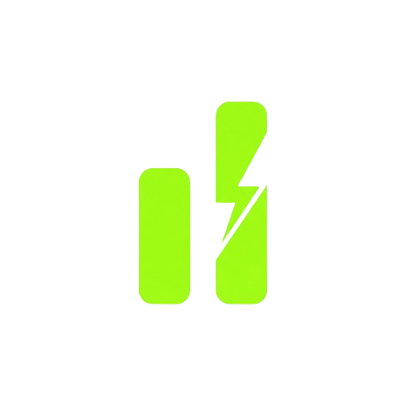

RANKING | O BYD Dolphin Mini foi o eletrificado mais vendido no Brasil em setembro, com 9.385 unidades emplacadas. O modelo terminou o mês na primeira posição do ranking elaborado com dados da Federação Nacional da Distribuição de Veículos Automotores (Fenabrave).